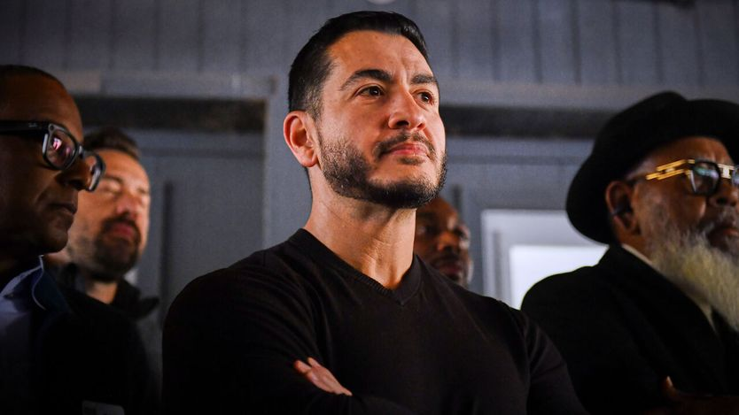
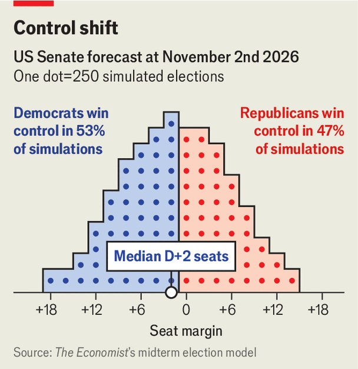

投票日将至，民主党赌不满情绪能把自己送上胜利
As voters head to the polls, Democrats bet that discontent will power their victory
本刊对中期选举结果的最新预测

- 本刊模型给民主党翻转众议院94%的概率，但参议院只给53%，明显低于市场75%和内特·西尔弗的82%；分歧源于我们假设全国民调平均高估民主党约1个百分点。
- 分歧集中在红州：对阿拉斯加、艾奥瓦、堪萨斯、俄亥俄、得州五个关键战场，我们的胜率估计比Kalshi的价格低约20个百分点，相当于2.5个百分点的差距。
- 即便如此，模型仍让民主党在缅因、密歇根、北卡等州拿到49席，阿拉斯加、俄亥俄、得州被视为五五开，可能决定第50席与决定多数归属的第51席。
- 收官阶段两条负面新闻都没进民调均值：密歇根初选落败者倒戈背书共和党，阿拉斯加被曝招募同名候选人分流选票，预测市场基本没有反应。
这对共和党是一场难打的选战：他们要面对一个不受欢迎、无处不在的特朗普，以及对他政策愤怒的选民。总统曾承诺压低物价，却发动了一场战争、加征关税，把物价推高了。想在众议院靠重划选区锁定胜利的图谋看来要落空——我们的预测模型给民主党翻转众议院94%的概率。共和党被迫在昔日票仓防守参议院席位，本轮中期选举的广告支出预计将创纪录，甚至超过2024年总统大选。
但就在美国人走向投票站时，共和党几个月来第一次迎来好消息。在密歇根，亲以色列的民主党人黑利·史蒂文斯在参议院初选以微弱差距输给更进步的阿卜杜勒·埃尔-赛义德，她在最后时刻背书了共和党候选人迈克·罗杰斯。在阿拉斯加参议院选战中，民主党候选人玛丽·佩尔托拉被《纽约时报》一则报道震动：她的团队招募了一名与共和党对手同名的人参选，以分走其选票。这些插曲会有影响吗？
两条新闻都出得太晚，民调均值还来不及反映。预测市场对此不以为意，尽管围绕佩尔托拉阵营的法律纠纷看来要拖上几周。在Kalshi上，佩尔托拉的胜率仍是72%，与《纽约时报》报道前夜相同；埃尔-赛义德的胜率到11月2日下午已升至78%。后者反映的是交易员对《纽约时报》与锡耶纳学院合作民调最后一批数据的反应——这家机构是美国最著名的民调方。数据11月1日发布，显示的不只是蓝色浪潮，而是海啸：埃尔-赛义德领先11个百分点，其他参议院战场州的民主党人也领先1到7个百分点。

市场现在把民主党视为拿下参议院的热门，概率75%。美国最著名的量化选举预测者内特·西尔弗给民主党82%。但本刊的预测模型更谨慎，认为翻转参议院的概率只有53%。分歧的主要来源是：我们的模型基于历史，预测全国民调会高估民主党约1个百分点。这种偏差在通常投共和党的州更明显——而今年这些州恰恰包括对民主党夺回参议院至关重要的得州、阿拉斯加、艾奥瓦、堪萨斯和俄亥俄。
在浅蓝与紫色州，我们的模型与市场大致一致；但对民主党深入共和党腹地的能力，我们远更怀疑。我们对民主党在核心红州战场——阿拉斯加、艾奥瓦、堪萨斯、俄亥俄、得州——的胜率估计，都比Kalshi的价格低约20个百分点，相当于约2.5个百分点的差距。在俄亥俄，民调显示民主党人谢罗德·布朗对共和党现任乔恩·赫斯特德的领先在缩小。
即便如此，我们的模型认为民主党在足够多的州占优——包括缅因、密歇根和北卡罗来纳——可拿到49个参议院席位。另有三个州被判定为五五开：阿拉斯加、俄亥俄和得州，其中可能产生第50席和决定多数归属的第51席。
这既说明特朗普不受欢迎，也说明他钦点的不少候选人令人反感，比如得州的肯·帕克斯顿、堪萨斯的罗杰·马歇尔。如今民主党胜算不大但并非不可能的州，还包括南卡罗来纳——两年前特朗普在这里赢了18个百分点。代表该州在参议院20多年的林赛·格雷厄姆7月去世，由政治新手、其妹妹达琳接任。上周《纽约时报》与锡耶纳的民调发现，这场选战打平了。
于是在竞选最后几天，两党都在做最后动员。特朗普的收官论述不走常规：他没有为自己的政绩做连贯辩护，主题包括毫无根据地宣称埃尔-赛义德是圣战分子、吹嘘首都倒影池的新管道，以及盛赞赫斯特德的臀部。特朗普这出戏或许能帮一些候选人催出基本盘，但在紫色州是麻烦。
民主党的信息更简单：特朗普更在意抬高自己的财富，而不是帮普通美国人。「我们之所以有生活成本危机，是因为我们有腐败危机，」詹姆斯·塔拉里科周六在休斯敦的集会上说。他正试图成为30多年来得州第一位民主党参议员，我们的模型给他52%的胜算。选情如此接近，既说明特朗普的不受欢迎创造了机会，也说明民主党要把机会变成胜利并不容易。